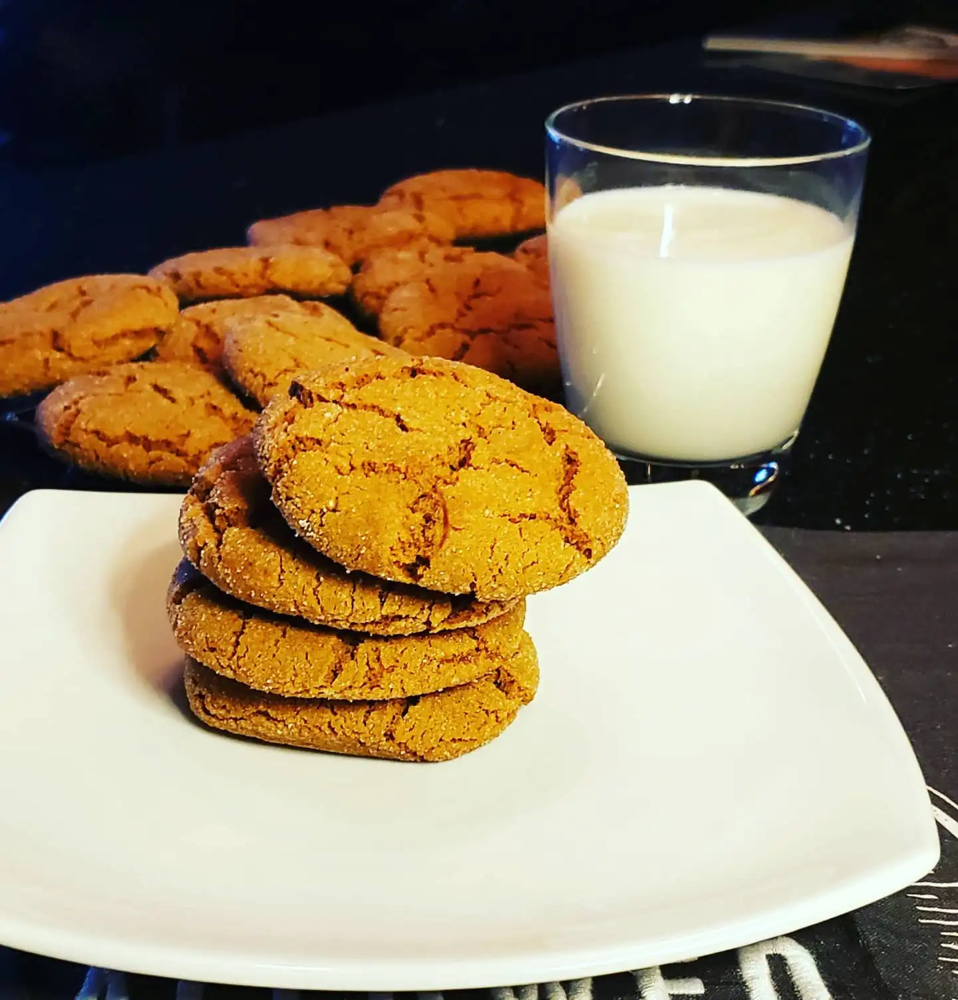

Spicy Molasses Cookies

Back to the recipe box
Description:
This is a delicious and spicy version of a molasses cookie. It is the perfect treat for any time of year. Especially when paired with a cold glass of milk.
Equipment:
- Cookie sheets
- Bowls, measuring cups and spoons (a scale is best)
- Stand mixer or electric mixer (not required but very helpful)
Ingredients:
- ½ cup 100g sugar for rolling the cookies in
- 2½ cups 315g all purpose flour
- 1 tsp baking soda
- 2 tsp ground cinnamon
- 1½ tsp ground ginger
- ½ tsp ground cloves
- ¼ tsp ground allspice
- ⅓ tsp salt
- ⅓ tsp ground black pepper
- ¾ cup 170g butter at room temperature
- ⅓ cup 65g dark brown sugar
- ⅓ cup 65g granulated sugar
- 1 large egg yolk
- 1½ tsp vanilla extract
- ⅓ cup 110g molasses light or dark
Cooking steps:
- Begin by mixing the sugar and butter together until it becomes creamy in texture. A stand mixer or hand mixer are great assets in this part, however not absolutely necessary.
- While doing step 1, in a separate bowl whisk together the flour with baking soda, all of the spices and the salt
- Once mixture is creamy, add the egg yolk, and beat until combined. Scrape down sides as needed
- Add in the vanilla and molasses and stir until completely incorporated
- Decrease mixer speed, and gradually add the flour mixture to the batter until fully combined
- Prepare 2 baking sheets with parchment paper, and put the 1/2 c sugar into a bowl
- Roll up each cookie, about 2 Tbsp of batter for each. into a ball and then toss each ball in the sugar. Put the cookie onto the cookie sheet and slightly flatten if desired
- Bake the cookies at 190C / 375F for approximately 10 to 12 minutes until the edges are just beginning to brown. Let sit on the sheet for 10 minutes before putting cookies on a wire rack to cool